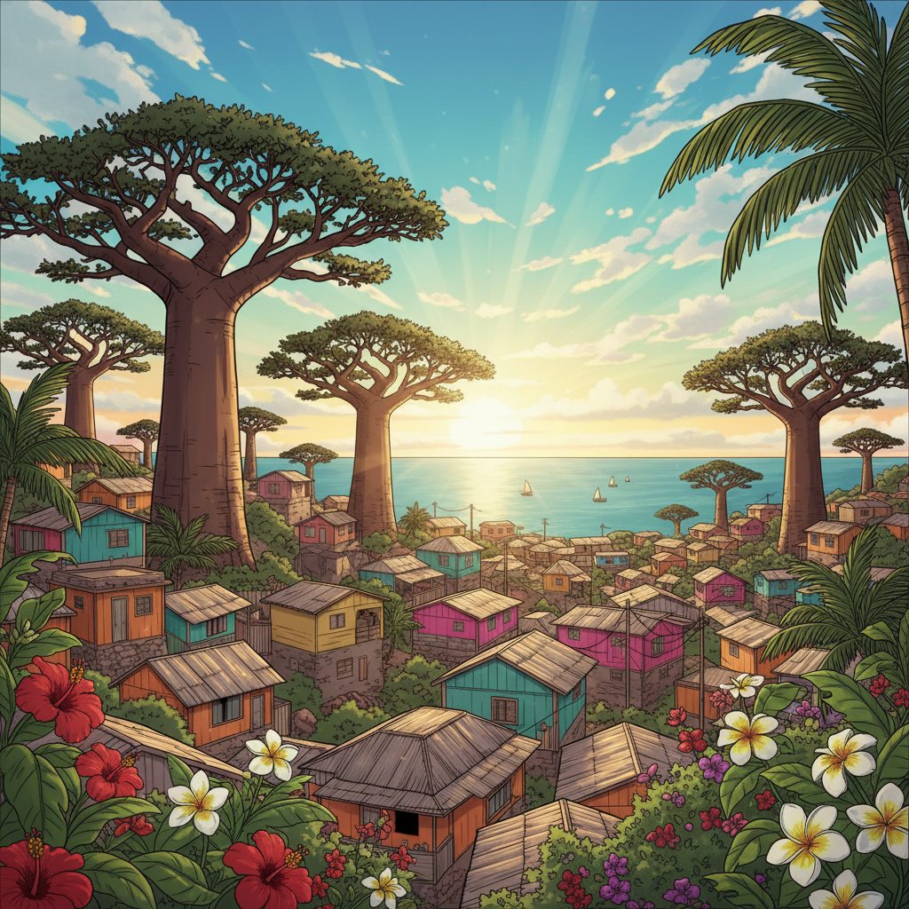
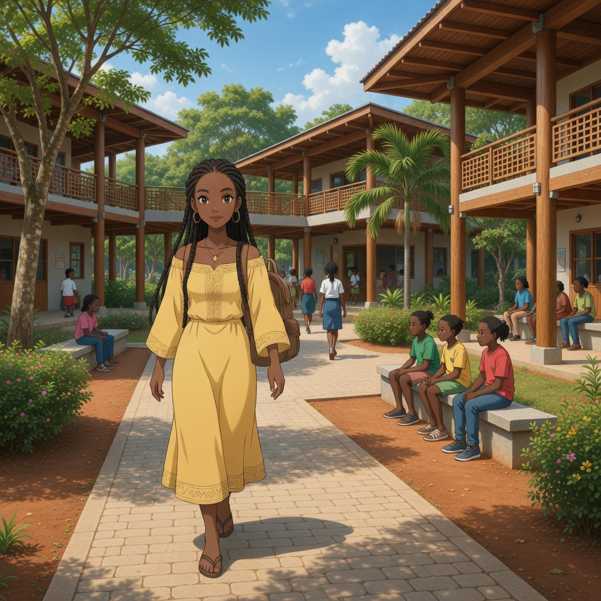
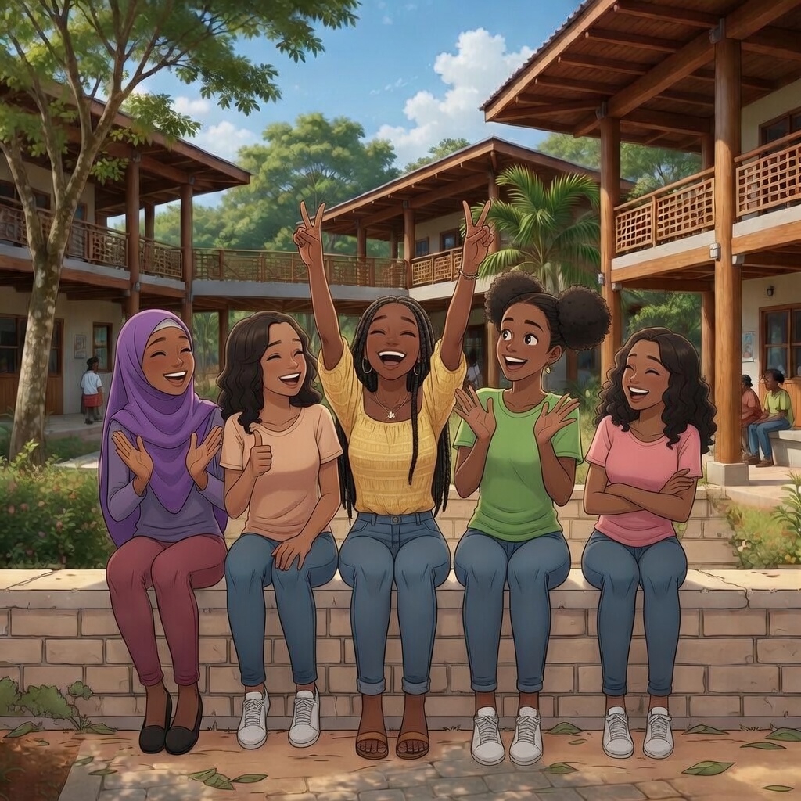
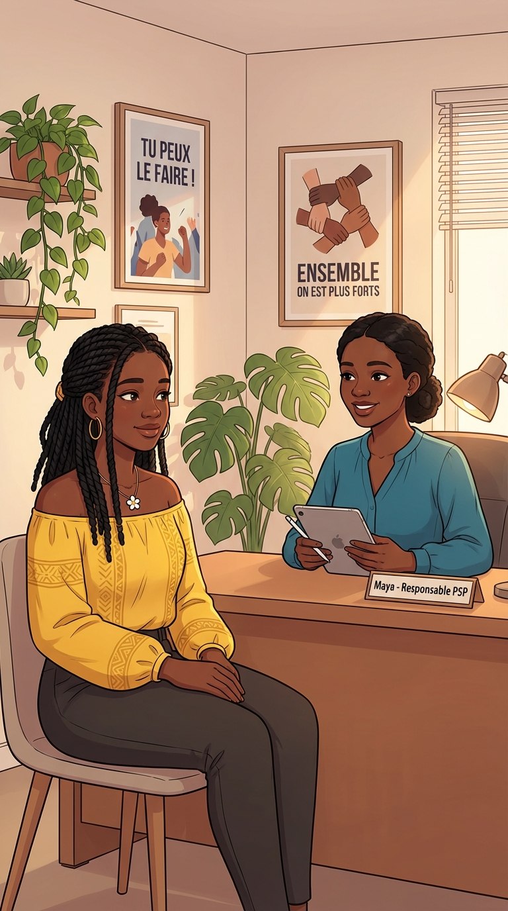
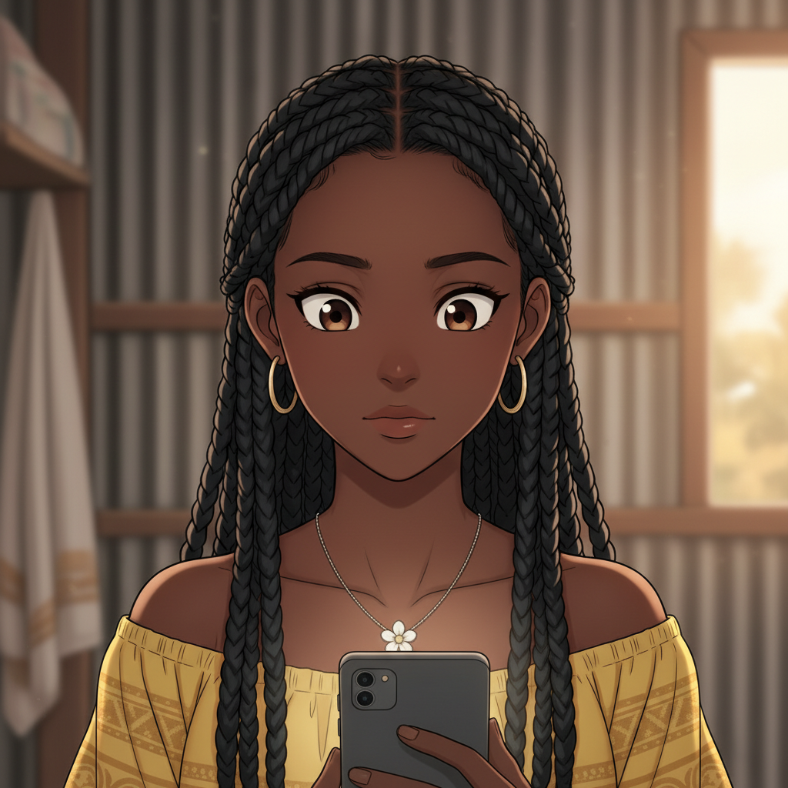
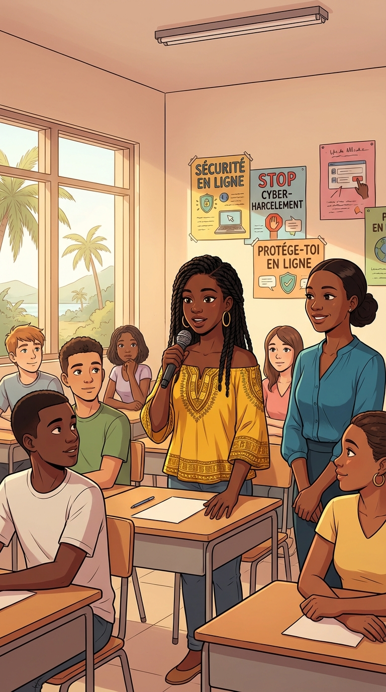
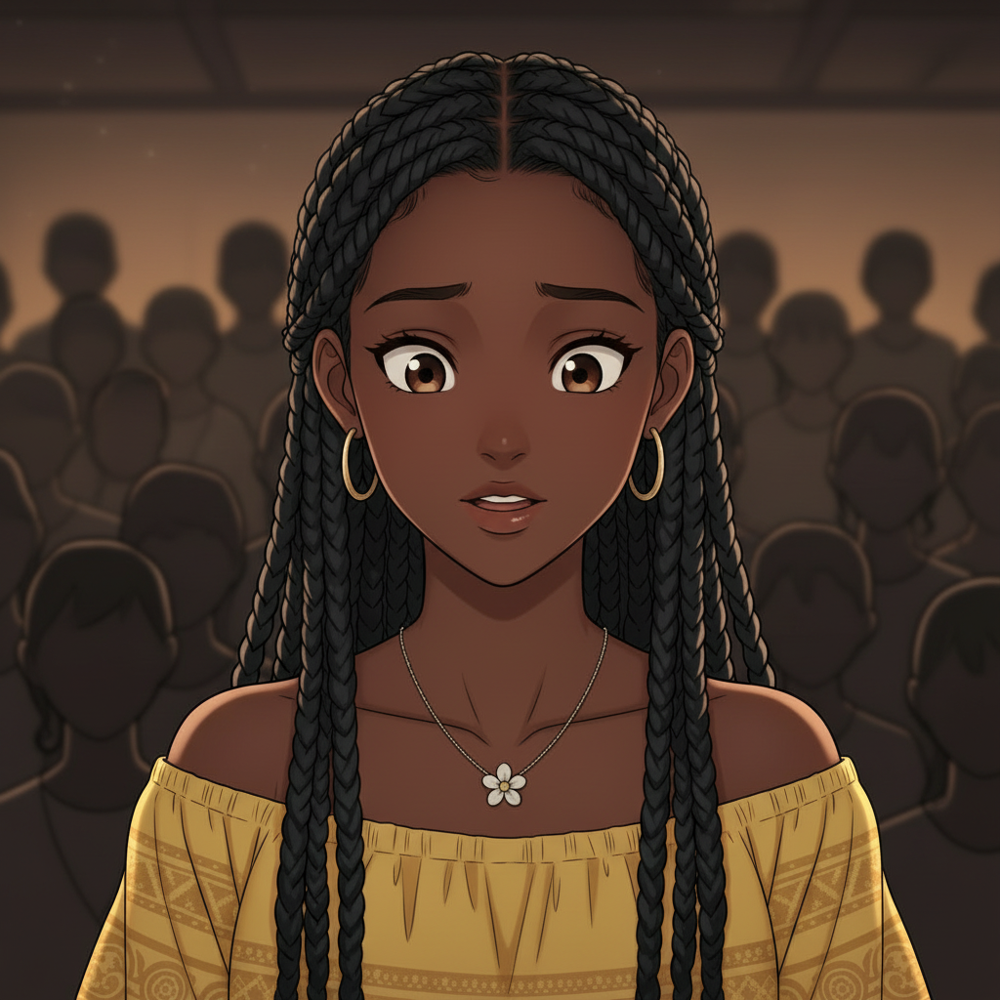
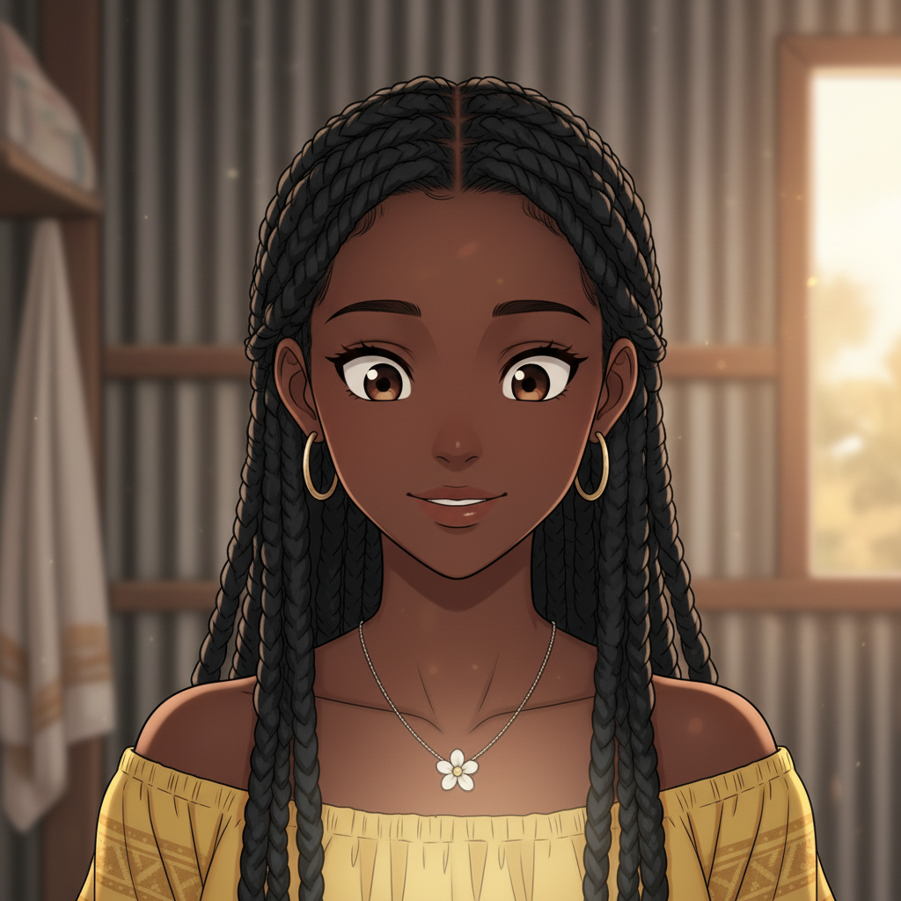
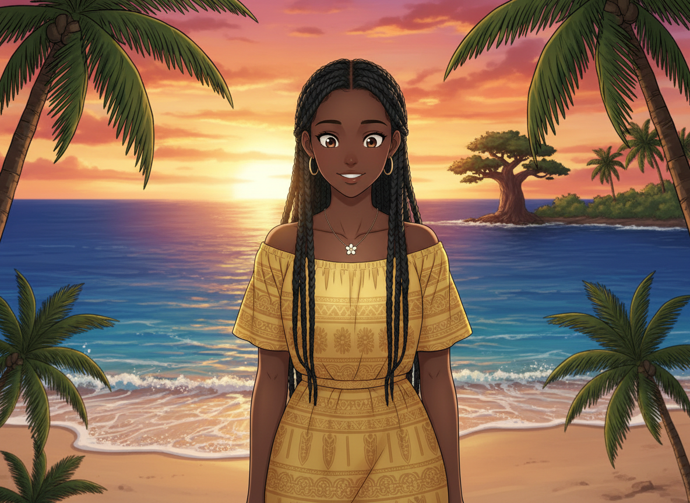

3 mois plus tard...

Le chemin a été long, mais Inaya a repris sa vie en main.

Hahaha !
Arrête, t'es bête !

Tu as fait tellement de progrès, Inaya.
Grâce à vous. Et à Meïssa.

Il y a un atelier de prévention au lycée. Si tu voulais témoigner...
Je veux le faire. Pour que d'autres ne tombent pas dans le même piège.

Je vais vous raconter mon histoire...

Personne ne mérite ce qui m'est arrivé.
Mais surtout... personne ne doit rester seul avec ça.

Et toi qui lis ça...
Si tu traverses quelque chose de difficile...
Parle. À quelqu'un. N'importe qui.
Tu n'es pas seul(e). ❤️
BESOIN D'AIDE ?
📞
PSP Mayotte
Point Services aux Particuliers
🛡️
3018 — Net Écoute
Cyberharcèlement (gratuit, anonyme)
🆘
119 — Allô Enfance en Danger
24h/24, 7j/7 (gratuit, anonyme)
💬
e-Enfance
www.e-enfance.org

Inaya a retrouvé sa lumière.
Et toi aussi, tu peux la retrouver.